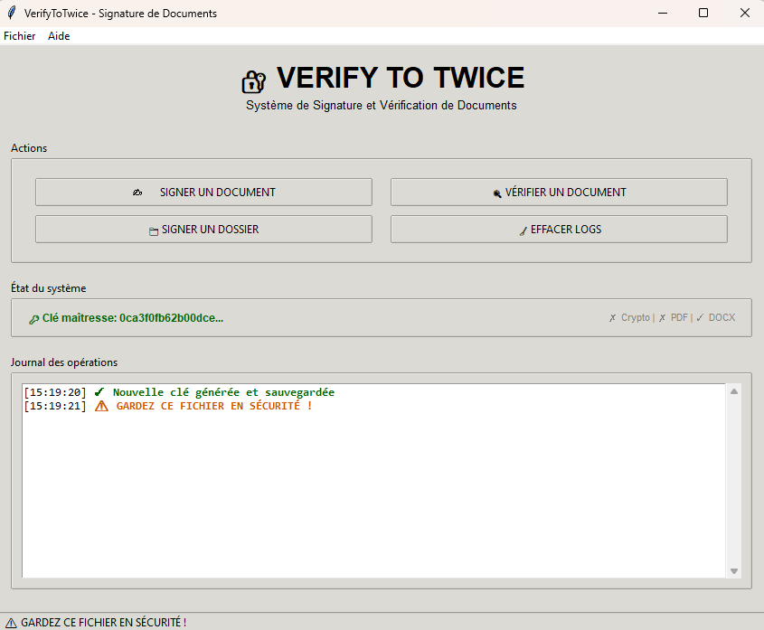

VerifyToTwice
Solution desktop de signature et vérification de documents
Application de bureau pour signer et vérifier l'authenticité des documents via des signatures cryptographiques ; toutes les opérations s'effectuent localement sur votre machine Windows.

Fonctionnalités
Génération d'empreinte (SHA-256)
Calcule une empreinte unique du document pour garantir son intégrité.
Signatures sécurisées (HMAC)
Signatures basées sur HMAC pour authentifier l'origine du document.
Vérification d'intégrité
Détecte toute modification du contenu après la signature.
Formats pris en charge
PDF, Word (.docx) et fichiers texte courants.
Interface graphique simple
Conçue pour être claire et facile à utiliser sur poste de travail.
Sécurité
Hachage SHA-256
Empreintes cryptographiques robustes pour l'intégrité des documents.
Signatures HMAC
Authentification des documents via HMAC sécurisé.
Chiffrement AES
Options de chiffrement symétrique pour protéger les données sensibles.
Identifiants uniques
Chaque signature reçoit un identifiant unique pour la traçabilité.
À propos
VerifyToTwice est une application de bureau conçue pour aider les utilisateurs à protéger et vérifier des documents importants en utilisant des signatures numériques et des empreintes de contenu ; toutes les opérations s'exécutent localement et aucun fichier n'est transféré en ligne via ce site.
Téléchargement
Version : 1.0
Le programme s'exécute localement sur Windows (fichier .exe).
Télécharger VerifyToTwice (.exe)Ce site présente le logiciel — il ne signe ni ne vérifie de documents en ligne.
Instructions d'installation
- Téléchargez le fichier .exe ci‑dessus.
- Double-cliquez sur le fichier téléchargé pour lancer l'installation.
- Suivez l'assistant d'installation et ouvrez l'application après l'installation.